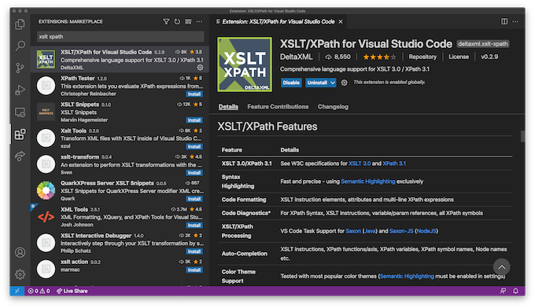

Overview
Coding in modern XSLT presents a rewarding yet challenging experience for the developer. Discover in this guide how Visual Studio Code, extended with DeltaXML's XSLT/XPath extension, can help with editing, reviewing, refactoring and running XSLT.
These pages complement the extensive Visual Studio Code documentation that begins:
Visual Studio Code is a lightweight but powerful source code editor which runs on your desktop and is available for Windows, macOS and Linux. It comes with built-in support for JavaScript, TypeScript and Node.js and has a rich ecosystem of extensions for other languages...
The User Interface
Visual Studio Code's user interface has a different look and feel to that of legacy XSLT editors. The Command Palette, along with keybindings to most common commands, play a significant role in providing a clearer environment to work in. User interface clutter is significantly reduced by eschewing previous designs which depended on a set of toolbars, each with an abundance of buttons.
The application menu bar and associated dropdown menus usefully group the more essential actions for managing your code. The View menu is particularly useful as it logically sets out the large set of view-configuration commands.
The sections below introduce you to the fundamental parts of the user interface from the perspective of an XSLT/XPath developer.
The Command Palette
A principal part of Visual Studio Code's user interface is the Command Palette, triggered by the keyboard shortcut ⇧⌘P. The Command Palette shows all available commands in a dropdown list. The list of commands is filtered as you type. The most recently used commands are shown at the top of the list.
Keyboard Shortcuts
While the Command Palette provides convenient access to features you should find that keyboard shortcuts are
more effective for commands you use most
frequently.
The keyboard shortcut for commands is shown alongside each listed command in the Command Palette. Not all
commands
have key bindings, but these can be configured using the command
Preferences: Open Keyboard Shortcuts
(⌘K⌘S). See:
Key Bindings for Visual Studio Code
Settings
By adding or modifying Visual Studio Settings, using the Preferences: Open User Settings
command,
you can customize a range of editor and extension features to meet your needs.
See the Settings section for details on some of the more important settings for
developing in XSLT and XPath.
Install the XSLT/XPath Extension
Extensions are managed in the Extensions view (⇧⌘X) of the Side Bar.
Type XSLT XPath in the Extensions view search bar and, on the XSLT/Path for Visual Studio
Code entry, press the install button
.

Color Theme Extensions
Visual Studio Code includes a small set of light and dark color themes. Alternative color themes are installed as extensions. The number of available themes can be overwhelming, but VS Code has a built-in Theme Preview feature and there are websites like vscodethemes that provide a preview before installing the theme.
The XSLT Dark Themes extension provides a set of popular dark color themes specially enhanced for XSLT and XPath
Other Extensions
Among the hundreds of high quality extensions available for Visual Studio Code, Live Share, for collaborative working and Live Server for when you're generating HTML with XSLT are particularly useful.
Edit XML, XSLT or XPath
For a comprehensive guide to the Visual Studio Code editor features see the Microsoft Visual Studio Code User Guide.
Language Specific Features
XSLT and XPath specific editing features are described in the Editing XSLT/XPath page of the documentation that your are reading now. More general XML editing features are described in the Editing XML section.
The features described at Editing XSLT/XPath include:
- IntelliSense (Auto Complete)
- Syntax Highlighting
- Code Formatting
- Code Refactoring
- Symbol Renaming
- Code Refactoring
- XSLT/XPath Linter
Run XSLT - Quick Start
XSLT transforms are run using Visual Studio Code Tasks.
Before configuring an XSLT task you should ensure that you open a
Workspace folder (⌘O) from Visual Studio Code.
The configuration is saved in a tasks.json file in this workspace folder.
To create your first task, use the Run Build Task command (⇧⌘B).
As there is no currently configured task, you should be prompted to configure one
(if another extension inhibits this, run Configure Task instead). You can then,
select either the Saxon or Saxon-JS task.
A task will be added to the tasks.json task with default properties. To further configure the
task, these properties can be changed or other properties added. Auto-completion and hints are provided to
assist in the task configuration. Next time you press ⇧⌘B your task will be run
in a Task tab in the Terminal window (toggled with ⌘J).
More on running XSLT
XSLT Tasks are explained in full in the Running XSLT section. More general information can be found in the Visual Studio Code Tasks documentation.